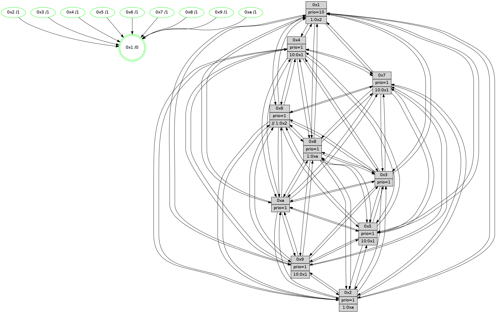

>> << IDX [start] -100 -25 -5 +0 +5 +25 +100 [1375.01899505]
 Previous packets
----------------------------------------------------------------------
1370.200220 beacon01(faad) #0 coord=01,02,03,04,05,06,07,0a,09,08 cycle=688.0ms assoc
-- color-indic=1 64 cb ba
1370.210203 beacon02(faad) #0 coord=01,02,03,04,05,06,07,0a,09,08 cycle=688.0ms assoc 64 58 8b
1370.220203 beacon03(faad) #0 coord=01,02,03,04,05,06,07,0a,09,08 cycle=688.0ms assoc 64 22 c6
1370.230202 beacon04(faad) #0 coord=01,02,03,04,05,06,07,0a,09,08 cycle=688.0ms assoc 64 55 2c
1370.240202 beacon05(faad) #0 coord=01,02,03,04,05,06,07,0a,09,08 cycle=688.0ms assoc 64 2f 61
1370.250202 beacon06(faad) #0 coord=01,02,03,04,05,06,07,0a,09,08 cycle=688.0ms assoc 64 a1 b6
1370.260204 beacon07(faad) #0 coord=01,02,03,04,05,06,07,0a,09,08 cycle=688.0ms assoc 64 db fb
1370.270206 beacon0a(faad) #0 coord=01,02,03,04,05,06,07,0a,09,08 cycle=688.0ms assoc 64 aa f0
1370.290210 beacon08(faad) #0 coord=01,02,03,04,05,06,07,0a,09,08 cycle=688.0ms assoc 64 5e 6a
1370.302421 [Hello(1): seq=783 sym=4,2,9,5,10,3,8,6,7 sysInfo=coloring-mode-on,ColoringModeRequestCalled stat=4:10,4,5,3/2:9,11,14,5/9:6,3,2,1/5:15,7,3,8/10:7,1,2,8/3:9,3,1,10/8:9,12,0,2/6:13,0,15,0/7:8,15,8,1]
1370.305452 [Color(9) seq=433 @0:0 prio=1 >10.@1,1.@5,1.@a]
1370.307030 [Hello(2): seq=870 sym=4,5,7,6,3,9,8,10,1 sysInfo=hasWarning stat=4:10,1,4,13/5:12,0,11,2/7:6,15,5,1/6:4,7,2,0/3:0,2,2,0/9:14,4,5,9/8:14,15,0,12/10:9,13,2,11/1:13,2,12,0]
1370.309838 [Color(2) seq=450 @0:0 prio=1 >1.@a]
1370.311392 [Hello(6): seq=874 sym=2,3,5,4,7,9,8,10,1 sysInfo=hasWarning stat=2:2,6,2,0/3:1,2,2,0/5:10,11,3,3/4:3,2,7,8/7:3,0,1,15/9:10,5,12,10/8:15,6,10,6/10:15,9,3,13/1:9,3,0,1]
1370.315136 [Color(10) seq=463 @0:0 prio=1]
1370.316438 [Color(6) seq=506 @0:0 prio=1 >>1.@2,1.@3,1.@4]
1370.317976 [Hello(3): seq=874 sym=1,7,6,2,4,8,9,10,5 sysInfo=hasWarning stat=1:0,9,4,0/7:13,14,7,14/6:7,10,2,0/2:13,7,15,2/4:7,9,10,13/8:6,13,1,5/9:4,2,8,0/10:5,12,12,5/5:4,7,10,0]
1370.321128 [Color(3) seq=503 @0:0 prio=1]
1370.328154 [Hello(5): seq=874 sym=7,6,4,3,1,9,8,10,2 sysInfo=hasWarning stat=7:3,8,13,0/6:7,11,10,4/4:10,15,2,15/3:13,5,7,2/1:5,9,3,0/9:5,3,13,10/8:6,8,0,4/10:5,1,0,9/2:12,5,7,7]
----------------------------------------------------------------------
1370.988352 beacon01(faad) #0 coord=01,02,03,04,05,06,07,0a,09,08 cycle=688.0ms assoc
-- color-indic=1 64 77 bf
1370.998336 beacon02(faad) #0 coord=01,02,03,04,05,06,07,0a,09,08 cycle=688.0ms assoc 64 e4 8e
1371.008334 beacon03(faad) #0 coord=01,02,03,04,05,06,07,0a,09,08 cycle=688.0ms assoc 64 9e c3
1371.018336 beacon04(faad) #0 coord=01,02,03,04,05,06,07,0a,09,08 cycle=688.0ms assoc 64 e9 29
1371.028336 beacon05(faad) #0 coord=01,02,03,04,05,06,07,0a,09,08 cycle=688.0ms assoc 64 93 64
1371.038335 beacon06(faad) #0 coord=01,02,03,04,05,06,07,0a,09,08 cycle=688.0ms assoc 64 1d b3
1371.048336 beacon07(faad) #0 coord=01,02,03,04,05,06,07,0a,09,08 cycle=688.0ms assoc 64 67 fe
1371.058341 beacon0a(faad) #0 coord=01,02,03,04,05,06,07,0a,09,08 cycle=688.0ms assoc 64 16 f5
1371.068341 beacon09(faad) #0 coord=01,02,03,04,05,06,07,0a,09,08 cycle=688.0ms assoc 64 98 22
1371.078340 beacon08(faad) #0 coord=01,02,03,04,05,06,07,0a,09,08 cycle=688.0ms assoc 64 e2 6f
1371.089565 [Hello(10): seq=807 sym=6,2,3,8,7,5,9,4,1 sysInfo=hasWarning stat=6:1,12,14,3/2:1,6,2,0/3:6,5,5,14/8:1,1,14,3/7:6,7,12,9/5:8,15,11,0/9:12,15,1,0/4:13,3,9,2/1:3,5,12,1]
1371.093240 [Color(1) seq=554 @0:0 prio=10 >1.@2,1.@3,1.@4,1.@5]
1371.095364 [Hello(7): seq=874 sym=2,3,5,6,4,8,9,10,1 sysInfo=hasWarning stat=2:8,8,2,3/3:2,14,6,3/5:15,0,9,2/6:11,8,3,11/4:11,6,4,1/8:0,1,1,0/9:13,5,8,1/10:6,13,13,7/1:9,6,14,0]
1371.098446 [Color(4) seq=413 @0:0 prio=1 >10.@1,1.@2,1.@3,1.@5]
1371.101217 [Hello(8): seq=818 sym=5,2,3,7,9,6,4,10,1 sysInfo=hasWarning stat=5:13,15,5,0/2:5,0,10,12/3:15,3,15,4/7:7,1,2,1/9:5,13,7,4/6:3,1,12,15/4:1,3,1,1/10:0,4,12,5/1:4,2,1,0]
1371.105331 [Color(8) seq=473 @0:0 prio=1 >1.@a]
1371.109026 [Color(7) seq=402 @0:0 prio=1 >10.@1,1.@5,1.@6,1.@8]
1371.112353 [Hello(9): seq=818 sym=2,5,3,4,7,6,8,10,1 sysInfo=hasWarning stat=2:2,3,13,10/5:10,4,15,7/3:5,7,7,3/4:8,0,2,2/7:8,7,7,4/6:2,9,12,13/8:6,6,2,5/10:0,1,0,0/1:8,8,2,1]
----------------------------------------------------------------------
1371.776484 beacon01(faad) #0 coord=01,02,03,04,05,06,07,0a,09,08 cycle=688.0ms assoc
-- color-indic=1 64 b3 b1
1371.786467 beacon02(faad) #0 coord=01,02,03,04,05,06,07,0a,09,08 cycle=688.0ms assoc 64 20 80
1371.796465 beacon03(faad) #0 coord=01,02,03,04,05,06,07,0a,09,08 cycle=688.0ms assoc 64 5a cd
1371.806466 beacon04(faad) #0 coord=01,02,03,04,05,06,07,0a,09,08 cycle=688.0ms assoc 64 2d 27
1371.816468 beacon05(faad) #0 coord=01,02,03,04,05,06,07,0a,09,08 cycle=688.0ms assoc 64 57 6a
1371.826468 beacon06(faad) #0 coord=01,02,03,04,05,06,07,0a,09,08 cycle=688.0ms assoc 64 d9 bd
1371.836467 beacon07(faad) #0 coord=01,02,03,04,05,06,07,0a,09,08 cycle=688.0ms assoc 64 a3 f0
1371.846471 beacon0a(faad) #0 coord=01,02,03,04,05,06,07,0a,09,08 cycle=688.0ms assoc 64 d2 fb
1371.866474 beacon08(faad) #0 coord=01,02,03,04,05,06,07,0a,09,08 cycle=688.0ms assoc 64 26 61
1371.879005 [Hello(1): seq=784 sym=4,2,9,5,10,3,8,6,7 sysInfo=coloring-mode-on,ColoringModeRequestCalled stat=4:10,5,5,3/2:10,12,14,5/9:7,4,2,1/5:0,7,3,8/10:8,2,2,8/3:10,4,1,10/8:10,13,0,2/6:14,1,15,0/7:9,0,8,1]
1371.885831 [Color(2) seq=451 @0:0 prio=1 >1.@a]
1371.887382 [Hello(6): seq=875 sym=2,3,5,4,7,9,8,10,1 sysInfo=hasWarning stat=2:2,6,2,0/3:2,3,2,0/5:11,11,3,3/4:3,3,7,8/7:4,1,1,15/9:11,5,12,10/8:0,7,10,6/10:0,9,3,13/1:10,4,0,1]
1371.890200 [Color(6) seq=507 @0:0 prio=1 >>1.@2,1.@3,1.@4]
1371.892023 [Color(3) seq=504 @0:0 prio=1]
1371.894494 [Hello(5): seq=875 sym=7,6,4,3,1,9,8,10,2 sysInfo=hasWarning stat=7:3,9,13,0/6:7,11,10,4/4:10,0,2,15/3:13,5,7,2/1:5,10,3,0/9:6,3,13,10/8:7,9,0,4/10:6,1,0,9/2:12,5,7,7]
1371.899130 [Color(10) seq=464 @0:0 prio=1]
----------------------------------------------------------------------
1372.564614 beacon01(faad) #0 coord=01,02,03,04,05,06,07,0a,09,08 cycle=688.0ms assoc
-- color-indic=1 64 0f b4
1372.574597 beacon02(faad) #0 coord=01,02,03,04,05,06,07,0a,09,08 cycle=688.0ms assoc 64 9c 85
1372.584599 beacon03(faad) #0 coord=01,02,03,04,05,06,07,0a,09,08 cycle=688.0ms assoc 64 e6 c8
1372.594597 beacon04(faad) #0 coord=01,02,03,04,05,06,07,0a,09,08 cycle=688.0ms assoc 64 91 22
1372.604598 beacon05(faad) #0 coord=01,02,03,04,05,06,07,0a,09,08 cycle=688.0ms assoc 64 eb 6f
1372.614598 beacon06(faad) #0 coord=01,02,03,04,05,06,07,0a,09,08 cycle=688.0ms assoc 64 65 b8
1372.624597 beacon07(faad) #0 coord=01,02,03,04,05,06,07,0a,09,08 cycle=688.0ms assoc 64 1f f5
1372.634603 beacon0a(faad) #0 coord=01,02,03,04,05,06,07,0a,09,08 cycle=688.0ms assoc 64 6e fe
1372.654604 beacon08(faad) #0 coord=01,02,03,04,05,06,07,0a,09,08 cycle=688.0ms assoc 64 9a 64
1372.667115 [Hello(10): seq=808 sym=6,2,3,8,7,5,9,4,1 sysInfo=hasWarning stat=6:1,12,14,3/2:1,6,2,0/3:6,5,5,14/8:2,2,14,3/7:7,8,12,9/5:8,15,11,0/9:13,15,1,0/4:13,4,9,2/1:4,6,12,1]
1372.670161 [STC(1) #0.233 tree-change,inconsistent-stability,stable,to-color d=0]
1372.671431 [Hello(8): seq=819 sym=5,2,3,7,9,6,4,10,1 sysInfo=hasWarning stat=5:14,15,5,0/2:6,1,10,12/3:15,4,15,4/7:7,2,2,1/9:6,13,7,4/6:4,2,12,15/4:1,3,1,1/10:1,5,12,5/1:5,2,1,0]
1372.675130 [Hello(7): seq=875 sym=2,3,5,6,4,8,9,10,1 sysInfo=hasWarning stat=2:9,9,2,3/3:2,15,6,3/5:0,0,9,2/6:12,9,3,11/4:11,6,4,1/8:0,1,1,0/9:14,5,8,1/10:7,14,13,7/1:10,6,14,0]
1372.678452 [Color(1) seq=555 @0:0 prio=10 >1.@2,1.@3,1.@4,1.@5]
1372.680623 [Hello(9): seq=819 sym=2,5,3,4,7,6,8,10,1 sysInfo=hasWarning stat=2:2,4,13,10/5:11,4,15,7/3:5,8,7,3/4:8,0,2,2/7:8,7,7,4/6:3,10,12,13/8:6,6,2,5/10:0,2,0,0/1:9,8,2,1]
1372.683904 [Hello(4): seq=875 sym=5,8,6,2,3,9,7,10,1 sysInfo= stat=5:13,12,5,1/8:6,11,0,0/6:8,10,11,14/2:15,7,4,0/3:5,6,14,15/9:14,14,13,1/7:6,7,1,0/10:12,9,15,14/1:0,13,0,1]
1372.687353 [Color(4) seq=414 @0:0 prio=1 >10.@1,1.@2,1.@3,1.@5]
1372.691287 [Color(8) seq=474 @0:0 prio=1 >1.@a]
1372.694047 [Color(7) seq=403 @0:0 prio=1 >10.@1,1.@5,1.@6,1.@8]
----------------------------------------------------------------------
1373.352744 beacon01(faad) #0 coord=01,02,03,04,05,06,07,0a,09,08 cycle=688.0ms assoc
-- color-indic=1 64 8a 0a
1373.362726 beacon02(faad) #0 coord=01,02,03,04,05,06,07,0a,09,08 cycle=688.0ms assoc 64 19 3b
1373.372726 beacon03(faad) #0 coord=01,02,03,04,05,06,07,0a,09,08 cycle=688.0ms assoc 64 63 76
1373.382726 beacon04(faad) #0 coord=01,02,03,04,05,06,07,0a,09,08 cycle=688.0ms assoc 64 14 9c
1373.392727 beacon05(faad) #0 coord=01,02,03,04,05,06,07,0a,09,08 cycle=688.0ms assoc 64 6e d1
1373.402726 beacon06(faad) #0 coord=01,02,03,04,05,06,07,0a,09,08 cycle=688.0ms assoc 64 e0 06
1373.412727 beacon07(faad) #0 coord=01,02,03,04,05,06,07,0a,09,08 cycle=688.0ms assoc 64 9a 4b
1373.422731 beacon0a(faad) #0 coord=01,02,03,04,05,06,07,0a,09,08 cycle=688.0ms assoc 64 eb 40
1373.442732 beacon08(faad) #0 coord=01,02,03,04,05,06,07,0a,09,08 cycle=688.0ms assoc 64 1f da
1373.454813 [Hello(5): seq=876 sym=7,6,4,3,1,9,8,10,2 sysInfo=hasWarning stat=7:4,10,13,0/6:7,11,10,4/4:11,1,2,15/3:13,5,7,2/1:5,11,4,0/9:7,3,13,10/8:8,10,0,4/10:7,2,0,9/2:12,5,7,7]
1373.457760 [STC(10)->1 #0.233 tree-change,inconsistent-stability,stable,to-color d=1]
1373.459535 [Hello(2): seq=872 sym=4,5,7,6,3,9,8,10,1 sysInfo=hasWarning stat=4:11,3,4,13/5:14,0,11,2/7:8,1,5,1/6:6,9,2,0/3:1,4,2,0/9:0,4,5,9/8:0,1,0,12/10:11,15,2,11/1:15,4,13,0]
1373.463975 [STC(2)->1 #0.233 tree-change,inconsistent-stability,stable,to-color d=1]
1373.465291 [Color(10) seq=465 @0:0 prio=1]
1373.466565 [Color(2) seq=452 @0:0 prio=1 >1.@a]
1373.469126 [Color(9) seq=435 @0:0 prio=1 >10.@1,1.@5,1.@a]
1373.471263 [Hello(6): seq=876 sym=2,3,5,4,7,9,8,10,1 sysInfo=hasWarning stat=2:2,6,2,0/3:2,4,2,0/5:12,11,3,3/4:4,4,7,8/7:5,2,1,15/9:12,5,12,10/8:1,8,10,6/10:1,10,3,13/1:11,5,1,1]
1373.474812 [STC(5)->1 #0.233 tree-change,inconsistent-stability,stable,to-color d=1]
1373.476314 [STC(6)->1 #0.233 tree-change,inconsistent-stability,stable,to-color d=1]
1373.477674 [Hello(3): seq=876 sym=1,7,6,2,4,8,9,10,5 sysInfo=hasWarning stat=1:2,11,5,0/7:15,0,7,14/6:7,10,2,0/2:13,7,15,2/4:8,11,10,13/8:8,15,1,5/9:6,2,8,0/10:7,13,12,5/5:6,7,10,0]
1373.481136 [STC(3)->1 #0.233 tree-change,inconsistent-stability,stable,to-color d=1]
1373.483090 [Color(3) seq=505 @0:0 prio=1]
1373.486697 [Color(6) seq=508 @0:0 prio=1 >>1.@2,1.@3,1.@4]
1373.488514 [TreeStatus(5)-.->1 #0.233 tree-change,inconsistent-stability,stable child=1]
----------------------------------------------------------------------
1374.140874 beacon01(faad) #0 coord=01,02,03,04,05,06,07,0a,09,08 cycle=688.0ms assoc
-- color-indic=1 64 36 0f
1374.150857 beacon02(faad) #0 coord=01,02,03,04,05,06,07,0a,09,08 cycle=688.0ms assoc 64 a5 3e
1374.160857 beacon03(faad) #0 coord=01,02,03,04,05,06,07,0a,09,08 cycle=688.0ms assoc 64 df 73
1374.170857 beacon04(faad) #0 coord=01,02,03,04,05,06,07,0a,09,08 cycle=688.0ms assoc 64 a8 99
1374.180858 beacon05(faad) #0 coord=01,02,03,04,05,06,07,0a,09,08 cycle=688.0ms assoc 64 d2 d4
1374.190857 beacon06(faad) #0 coord=01,02,03,04,05,06,07,0a,09,08 cycle=688.0ms assoc 64 5c 03
1374.200860 beacon07(faad) #0 coord=01,02,03,04,05,06,07,0a,09,08 cycle=688.0ms assoc 64 26 4e
1374.210861 beacon0a(faad) #0 coord=01,02,03,04,05,06,07,0a,09,08 cycle=688.0ms assoc 64 57 45
1374.230862 beacon08(faad) #0 coord=01,02,03,04,05,06,07,0a,09,08 cycle=688.0ms assoc 64 a3 df
1374.242409 [Hello(10): seq=809 sym=6,2,3,8,7,5,9,4,1 sysInfo=hasWarning stat=6:2,13,15,3/2:1,7,2,0/3:7,6,6,14/8:3,3,14,3/7:8,9,12,9/5:9,15,12,1/9:14,0,1,0/4:14,5,9,2/1:4,7,13,1]
1374.245439 [Color(1) seq=556 @0:0 prio=10 >1.@2,1.@3,1.@4,1.@5]
1374.247629 [Hello(8): seq=820 sym=5,2,3,7,9,6,4,10,1 sysInfo=hasWarning stat=5:15,15,6,1/2:7,2,11,12/3:0,5,0,4/7:7,3,2,1/9:6,14,7,4/6:5,3,13,15/4:1,3,1,1/10:2,6,13,5/1:5,2,1,0]
1374.252050 [Color(8) seq=475 @0:0 prio=1 >1.@a]
1374.254155 [Hello(7): seq=876 sym=2,3,5,6,4,8,9,10,1 sysInfo=hasWarning stat=2:10,10,3,3/3:3,0,7,3/5:1,0,10,3/6:13,10,4,11/4:11,6,4,1/8:0,1,1,0/9:14,6,8,1/10:8,15,14,7/1:10,6,14,0]
1374.257301 [Color(7) seq=404 @0:0 prio=1 >10.@1,1.@5,1.@6,1.@8]
1374.260863 [Hello(4): seq=876 sym=5,8,6,2,3,9,7,10,1 sysInfo= stat=5:14,12,6,2/8:6,12,0,0/6:9,11,12,14/2:0,8,5,0/3:6,7,15,15/9:14,15,13,1/7:6,8,1,0/10:13,10,0,14/1:0,13,0,1]
1374.264320 [Color(4) seq=415 @0:0 prio=1 >10.@1,1.@2,1.@3,1.@5]
1374.267565 [Hello(9): seq=820 sym=2,5,3,4,7,6,8,10,1 sysInfo=hasWarning stat=2:2,4,13,10/5:12,4,0,8/3:6,9,8,3/4:9,1,2,2/7:8,8,7,4/6:4,11,13,13/8:6,7,2,5/10:0,2,0,0/1:9,8,2,1]
----------------------------------------------------------------------
1374.929006 beacon01(faad) #0 coord=01,02,03,04,05,06,07,0a,09,08 cycle=688.0ms assoc
-- color-indic=1 64 f2 01
1374.938988 beacon02(faad) #0 coord=01,02,03,04,05,06,07,0a,09,08 cycle=688.0ms assoc 64 61 30
1374.948989 beacon03(faad) #0 coord=01,02,03,04,05,06,07,0a,09,08 cycle=688.0ms assoc 64 1b 7d
1374.958988 beacon04(faad) #0 coord=01,02,03,04,05,06,07,0a,09,08 cycle=688.0ms assoc 64 6c 97
1374.968988 beacon05(faad) #0 coord=01,02,03,04,05,06,07,0a,09,08 cycle=688.0ms assoc 64 16 da
1374.978990 beacon06(faad) #0 coord=01,02,03,04,05,06,07,0a,09,08 cycle=688.0ms assoc 64 98 0d
1374.988989 beacon07(faad) #0 coord=01,02,03,04,05,06,07,0a,09,08 cycle=688.0ms assoc 64 e2 40
1374.998994 beacon0a(faad) #0 coord=01,02,03,04,05,06,07,0a,09,08 cycle=688.0ms assoc 64 93 4b